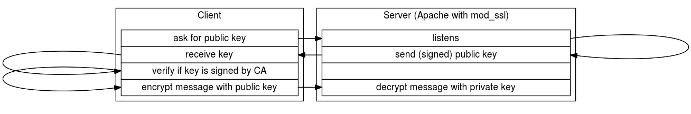

Apache configuration for HTTPS (208.2)
Apache configuration for HTTPS (208.2)¶
Candidates should be able to configure a web server to provide HTTPS.
Key Knowledge Areas¶
-
SSL configuration files, tools and utilities
-
Ability to generate a server private key and CSR for a commercial CA
-
Ability to generate a self-signed Certificate from private CA
-
Ability to install the key and Certificate
-
Awareness of the issues with Virtual Hosting and use of SSL
-
Security issues in SSL use
-
Virtual Hosting and use of SSL through Server Name Indicator (SNI)
-
Disabling insecure protocols and ciphers
Terms and Utilities:¶
-
Apache2 configuration files -
/etc/ssl/, /etc/pki/ -
openssl, CA.pl -
SSLEngine, SSLCertificateKeyFile, SSLCertificateFile -
SSLCACertificateFile, SSLCACertificatePath -
SSLProtocol, SSLCipherSuite, ServerTokens, ServerSignature, TraceEnable
Apache2 configuration files¶
Depending on the Linux distribution in use, the following files and
directories may be used for configuration of Apache 2.x when Apache is
installed from packages: httpd.conf, apache.conf, apache2.conf,
/etc/httpd/, /etc/httpd/conf, /etc/httpd/conf.d, /etc/apache2/
Configuration files are expected to contain predefined directives. If a
directive is not explicitly defined, Apache will use a default setting.
This default may vary per Linux distribution, so consult your
distribution's Apache documentation. /usr/share/doc is a good place to start. Configuration files can be
checked for syntax errors using either of the following commands:
1 2 | |
Because Apache usually serves a daemon that listens to ports below 1024,
sudo or a root shell should be used to invoke all Apache related
commands. Refer to your system documentation to check for the
availability of the apachectl or apache2ctl command. If both exist,
they might be symlinked. The naming difference for this command has a
historical reason. apachectl was used for Apache 1.x and when Apache2
was released the command was hence renamed match the new name. Now that
Apache2.x has become the standard, either apache2ctl has been renamed to apachectl or both commands are
available for compatibility reasons. When available, the service
facility may point to httpd on Red Hat based systems, or to apache2 on
Debian-based systems: The apachectl command has many useful options.
It is in fact a shell script that functions as a wrapper for the httpd
binary. Consult the man page for all available arguments and options.
Just two more examples to get you started: To show all configured
virtual hosts, use:
1 | |
To show all currently running websites, use:
1 | |
Be careful interpreting the output from the command above. That output shows the configuration of the currently running websites. There is no guarantee that the website configuration on disk has changed since these websites were brought online. In other words: The output from the running processes does not necessarily have to match the contents of the configuration files (anymore).
In regards to the Apache configuration files, it is important to know
about the different ways Apache may be installed and configured.
Depending on the Linux distribution and Apache2.x version in use,
configuration files may be located and even named differently across
otherwise similar systems. As we will see further down this chapter,
Apache often uses one main configuration file. Within this file, other
configuration files may be included using the
INCLUDE /path/to/other/config directive. The configuration file syntax may be checked
for errors by invoking the apachectl script as shown previously. Each configuration
file that is included from the main configuration file in use will be
checked for consistency and syntax. Consistency here means that if a
dependant configuration file, certificate file or key file can not be
accessed properly by the user the httpd binary runs as, a warning will
be shown. If apachectl does not appear in your $PATH, use the
sudo find command with apachectl or apache2ctl as an argument. Depending on the size of your storage
volumes, it may be wiser to narrow this search down to specific
directories. You have been warned. If the service command is not
available on your system, the Apache daemon may be started, checked and
stopped by a SysV script instead. Look within the /etc/init.d/ directory for a script called httpd,
apache2 or equivalent. This script may be then called upon as follows,
to reveal the available arguments:
1 | |
Encrypted webservers: SSL¶
Apache can support SSL/TLS for (reasonably) secure SSL/TLS online communication. While TLS in version 1.2 is actually the currently favourable option, TLS encrypted HTTPS sessions are still referred to as 'SSL' encrypted sessions. TLS could in fact be seen as the successor to SSL (v3.0). So, just as with Apache versus Apache2, whenever Apache/SSL is mentioned in this chapter, TLS is implied as well. Unless otherwise specified. We will cover the strengths and weaknesses of both protocols further down this chapter.
The Secure Sockets Layer protocol (SSL) is a protocol which may be placed between a reliable connection-oriented network layer protocol (e.g., TCP/IP) and the application layer protocol (e.g., HTTP). SSL provides secure communication between client and server by allowing mutual authentication and the use of digital signatures for integrity and encryption for privacy. Currently there are two versions of SSL still in use: version 2 and version 3. Additionally, the successor to SSL, TLS (version 1.0, 1.1 and 1.2, which are based on SSL), TLS were designed by the IETF organisation.
Public key cryptography¶
SSL/TLS uses Public Key Cryptography (PKC), also known as asymmetric PKC CryptographyPublic Key cryptography. Public key cryptography is used in situations where the sender and receiver do not share a common secret, e.g., between browsers and web servers, but wish to establish a trusted channel for their communication.
PKC defines an algorithm which uses two keys, each of which may be used to encrypt a message. If one key is used to encrypt a message, then the other must be used to decrypt it. This makes it possible to receive secure messages by simply publishing one key (the public key) and keeping the other key secret (the private key). Anyone may encrypt a message using the public key, but only the owner of the private key will be able to read it. For example, Alice may send private messages to the owner of a key-pair (e.g., your web server), by encrypting the messages using the public key your server publishes. Only the server will be able to decrypt it using the corresponding private key.

A secure web server (e.g., Apache/SSL) uses HTTP over SSL/TLS, https
Apache443 using port 443 by default. The SSL/TLS port can be configured
by defining the Listen directive inside the main configuration file.
There should already be a listener configured for port 80 (HTTP). On
Debian-based systems, there is a dedicated file for defining the active
listeners. This file is called ports.conf and is included from the
main configuration file. Apart from this file, individual websites
should specify the listening host at the end of the ServerName or
NameVirtualHost declaration. Starting from Apache v2.4, NameVirtualHost has been deprecated in favour of
VirtualHost. A declaration like that could look as follows:
<VirtualHost *:443>. Within the browser, the use of HTTPS is signified
by the use of the https:// scheme in the URL. The public key is
exchanged during the set-up of the communication between server and
client (browser). That public key should be signed (it contains a
digital signature e.g., a message digest) by a so-called valid CA
(Certificate Authority). Each browser contains a number of so-called
Certificate Authority root-certificates: these can be used to
determine the validity of the CA's that signed the key. Not every
certificate out there is signed by one of these valid CA's. Especially
for testing purposes, it is common to sign certificates without the
intervention of a valid CA. This is done in order to save both
(validation) time and (registration fee) money. As of 2015, it has
become easier to maintain valid CA signed certificate. An organisation
called Let's Encrypt is willing to sign certificates for free, as long
as you play by the rules. Use your favourite web search engine to find
out more about Let's Encrypt, after reading this chapter.
Apache with mod_ssl¶
The Apache Software Foundation provides excellent documentation
regarding the use of mod_ssl,. We urge you to take the time to read
through the resources collected at the following URL:
https://httpd.apache.org/docs/current/ssl/
The subject of encryption is so vast and complicated that entire books have been written around about it. The added confidentiality and integrity only provide their value when encryption is implemented correctly. So called 'best practices' in regards to encryption may change overnight. In addition to the collection of resources listed at the URL above, we want to add the following URL: http://httpd.apache.org/docs/trunk/ssl/ssl_howto.html
As you can see, this URL does not point to the current version of the documentation. Instead, it points to the trunk version. At the time of this writing, this corresponds to the Apache 2.5 documentation. The trunk documentation will always point towards the most recent Apache version in development. And while the trunk Apache code may not be recommended to use, the documentation may be more recently updated than elsewhere. In regards to the subject of SSL/TLS, this results in more up-to-date best practices than the 2.4 documentation provides.
The documentation provided by The Apache Software Foundation is vendor-neutral. So when the Apache documentation states that the following directives should be present in the Apache main configuration file:
1 2 3 4 | |
It can very well be that these directives are configured amongst several configuration files. This depends on your Linux distribution. In addition to the documentation provided by The Apache Software Foundation, we will try to point out the configuration differences between Red Hat and Debian based distributions.
To use mod_ssl you will need to install the Apache and mod_ssl
package. Apachemod_ssl On Red Hat based systems, this is done using the
following command:
1 | |
On Debian-based systems, this is done using the following command:
1 | |
After installation, make sure the OpenSSL module is enabled within
Apache. The module should be available to the Apache daemon, and
included to be loaded during daemon start-up. Again, there are several
ways this can be achieved. A common way is similar to the websites-available and websites-enabled strategy. However, now we are dealing
with modules-available and modules-
enabled directories instead. As a plus, Debian-based
systems come with a utility called a2enmod. By invoking this command
as follows:
1 | |
a2enmod will create symlinks within the mods-enabled
directory, pointing to respectively
mods-available/ssl.conf and mods-available/ssl.load.
When Apache is reloaded, these symlinks will ensure the SSL module will
be loaded as well.
Red Hat based systems use the LoadModule directive instead. This directive should be declared
so it will be read during the start of the Apache daemon. On a Red Hat
based system, this could be achieved by a /etc/httpd/conf/httpd.conf that holds the following
INCLUDE directive:
1 | |
The default file /etc/httpd/conf.d/ssl.conf could then contain the following LoadModule and
Listen statements:
1 2 | |
After reloading Apache, the SSL module should be loaded together with
the Apache daemon. It is always a good practice to check for
configuration errors before restarting the Apache daemon. This can be
done using the apachectl configtest command and has been covered
earlier. The output should be clear to interpret whether Apache will
encounter errors or not, and why (it will).
Then, generate a key and Certificate Signing Request (CSR). Either sign the csr file yourself, thus creating a 'self-signed' certificate, or have it signed by a valid Certificate Authority (CA). Depending on who you are, a self-signed certificate might cause browser-warnings when presented via HTTPS. Having the csr signed by a valid CA might prevent this from happening.
Some additional directives should be used to configure the secure server
- for example the location of the key-files. It's beyond the scope of
this book to document all of these directives. However, you should be
familiar with most of the mod_ssl directives. You can find best
practices by searching the web and should also refer to your
distribution's specific mod_ssl documentation. The generic mod_ssl
documentation can be found on the mod_ssl mod_ssl
web-site.
mod_ssl can also be used to authenticate clients using client
certificates. These client certificates can be signed by your own CA and
mod_ssl will validate the certificates against this CA. To enable this
functionality set the SSLVerifyClient to require. Use the value none to
turn it off.
Certificates that are installed as part of your Linux distribution are
usually installed in /etc/ssl/certs on Debian-based systems, and in
/etc/pki/tls/certs on Red Hat based systems. The Red Hat based systems
may have a symlink in place that points /etc/ssl/certs to
/etc/pki/tls/certs for convenience and compatibility.
Keys or key-files that are installed as part of your Linux distribution
are in turn usually installed in /etc/ssl/private on Debian-based systems and in /etc/pki/tls/private on Red Hat based systems. Other directories within
/etc/ssl and /etc/pki may also contain specific key files.
It is often considered a best practice to create subdirectories when
working with specific keys and/or certificates. Especially because
specific cryptographic keys and certificates belong to each other. By
devoting a dedicated subdirectory to each keypair, structure will be
maintained within both the filesystem and configuration files pointing
to these files. These subdirecties may be created as part of the
/etc/ssl or /etc/pki hierarchy. But creating subdirectories below
/etc/apache2 or /etc/httpd can be done as well.
Directory /etc/ssl/ {#apachessl}
1 2 3 4 5 | |
openssl The openssl program is a command line interface to the OpenSSL
crypto library. You can use it to generate certificates, encrypt and
decrypt files, create hashes and much more. It is generally seen as "the
Swiss Army knife" of cryptography. One of the more common usages is to
generate (self-signed) certificates for use on a secured webserver (to
support the https protocol). /etc/ssl/openssl.cnf is the standard
location for its configuration file, where you can set defaults for the
name of your organization, the address etc.
Note
If you generate a certificate for a webserver you start by creating a
Certificate Signing Request (.csr). The openssl tool will prompt you for information it needs to
create the request, using defaults it fetches from the configuration
file. When you generate such a signing request, make sure you enter the
FQDN (\"Fully Qualified Domain Name\") of the server when openssl
Fully Qualified Domain Name prompts you for the "Common Name" or CN
(which is part of the "Distinguished Name"). For example when you
generate a CSR for the web-site Common Name https://www.foo.example/,
enter www.foo.example as the CN. Be aware that a certificate providing
foo.example would not be valid for the website accessed via
https://www.foo.example. Neither would this certificate be valid for the
website behind the URL https://webmail.foo.example. Seperate
certificates for each domain should be put in place. To combat this
necessity, many organizations choose to use wilcard- certificates.
Especially for internal hosted websites. When issuing a CSR for a
certificate that could be used to serve any of the .foo.example websites, the request should be done for
the CN value *.foo.example. Browsers will understand this wildcard
certificate when presented, and decide accordingly. www.foo.example
and webmail.foo.example could be configured to use this
certificate. https://foo.example on the other hand, would issue a
browser warning with this certificate.
How to create a SSL server Certificate {#apachesslcert}
While installing OpenSSL, the program openssl is installed CreatingSSL
Server Certificate on your system. This command can be used to create
the necessary files that implement a (self-signed) server certificate.
More specifically:
-
RSA You start by generating the RSA key file. It contains a pair of related keys, used to encrypt and decrypt messages to and from you. One half of the keypair will be used to encrypt messages that will be sent to you using the public key. The other half is used to decrypt these received messages using the private key. The public key will be made part of your digital certificate. This allows client systems to sent encrypted messages to your webserver that only this webserver can decrypt, as it holds the related private key;
-
Next you will create a Certificate Signing Request (CSR). Certificate Signing Request This is a file which contains the public key and identifying information like the name of your company, location etc;
-
The CSR is sent to a Certificate Authority (CA) which should verify the correctness of the information you provided and generate the certificate. This certificate contains a digital signature that allows verification that the CA has approved of the contents of the certificate. The certificate will contain the data you provided (including your public key) and it is signed by the CA using its private key. A certificate contains your RSA public key, your name, the name of the CA and is digitally signed by your CA. Browsers that know the CA can verify the Certificate Authority signature on that certificate, thereby obtaining your RSA public key. That enables them to send messages which only you can decrypt.
Note
You can create a signing request and then sign it yourself. In fact,
that is what Certificate Authorities do when they create their
root certificate. A root
certificate is simply a certificate that says that they
say they are whom they say they are. So, anybody can create a root
certificate and put any credentials on it just as they please. The root
certificate itself is no proof of anything. You will need to ensure that
it really was issued by a party you trust yourself. Either you visit
them and get a copy directly from them, or fetch it using another method
you trust or you rely on others you trust to have done this for you. One
of the ways you implicitly "trust" a large number of CAs is by relying
on their root certificates that are made part of your browser.
Triple-DES PEM As an example: to create an RSA private key that has a
keysize of 2048 bits, and which will be triple-des (3DES) encrypted,
stored in a file named server.key in the default format (which is
known as PEM), type:
1 | |
RSA keysizes below 1024 bits are considered out-of-date. 1024 bits seems to be a best practice today, with 2048, 3072, 4096 and onwards being valid options if all involved components are able to handle these keysizes without overexceeding thresholds.
openssl openssl will ask for a pass-phrase, which will be used as the
key to encrypt the private key. Please store this file in a secure
backup location and remember the pass-phrase. If you loose the
pass-phrase you will not be able to recover the key.
For testing purposes, it might be preferable to strip the password from the key file. This can accomplished by reading the key and exporting it as follows:
1 | |
The server.key file still holds the encrypted private key information
in ciphertext. The stripped.key file is a plain text file with the
unencrypted private key information as its contents. Handle with care.
To create a Certificate Signing Request (CSR) with the server RSA private key (output will be PEM formatted), execute the following:
1 | |
The signing request can now either be sent to a real CA, which will sign the request and create a digital certificate, or you can create your own CA and do it yourself. Note that if you do it yourself, you will also need to install the root certificate of your CA into your clients (e.g. browser) to signal them that a certificate signed by your own CA can be trusted. If you omit this step, you will be getting a lot of disturbing warnings about missing trust and insecurity.
CA.pl You can provide the openssl parameters yourself, but that can be
a daunting task for less experienced users. Hence, for conveniences sake
the OpenSSL software suite provides a perl script (CA.pl) to handle
most CA related tasks a lot easier. It has a simplified syntax and
supplies the more complex command line arguments to the underlying
openssl command.
CA.pl will default use values it reads from the standard OpenSSL
configuration file /etc/ssl/openssl.cnf. To create your own CA, find the CA shellscript or
CA.pl perlscript that should be part of the OpenSSL package. On Red
Hat based systems, this script is located in the /etc/pki/tls/misc
directory. Depending on your distribution, the script might not
interpret filenames for arguments. The script then instead looks for
predifined values for the key file and csr file. Page the script source
using a command like less or more and look for clues. The STDERR
output might also show some valueable pointers. In the following
example, newkey.pem and newreq.pem are used as file names by the
CA.pl script:
1 2 3 4 5 6 7 8 9 10 11 12 13 14 15 16 17 18 19 20 21 22 23 24 25 26 27 28 29 30 31 32 33 34 35 36 37 38 39 40 41 42 43 44 45 46 47 48 49 50 51 52 53 54 55 56 | |
Next create a signing request:
1 2 3 4 5 6 7 8 9 10 11 12 13 14 15 16 17 18 19 20 21 22 23 24 25 26 27 28 | |
Then, we sign the request:
1 2 3 4 5 6 7 8 9 10 11 12 13 14 15 16 17 18 19 20 21 22 23 24 25 26 27 28 29 30 31 32 33 34 | |
You now created a certificate signed by your own CA (newcert.pem). You
might want to rename the file to something more distinguishable, e.g
Certificate:ssltest.sue.nl. While at it, rename the server key file
too, for example PrivateKey:ssltest.sue.nl. Especially if you maintain a lot of keys and certificates
on a lot of servers, it really helps to be able to learn from the name
of a file what is in it.
The Certificate Signing Request (CSR) could have been sent to an
external Certificate Authority (CA) instead. You usually have to post
the CSR into a web form, pay for the signing and await a signed
Certificate. There are non-profit CA's that will perform similar tasks
free of charge, for example CAcert. However, their root certificate is not yet included
into most browsers so you will need to do that yourself if you are going
to use their services.
The server.csr file is no longer needed. Now you have two files:
ApacheSSLCertificateFile ApacheSSLCertificateKeyFile server.key and newcert.pem. In your Apache's httpd.conf file you should
refer to them using lines like these:
1 2 | |
It is considered a best practice to follow the 'least privilege' principle when managing key and certificate files. These files should preferebly be stored in a way that only the user account that runs the web server can access them.
Apache SSL Directives {#ssldir}
The following Apache SSL configuration directives should be familiar to you:
SSLEngine
- This directive toggles the usage of the SSL/TLS Protocol Engine. This should be used inside a \<VirtualHost> section to enable SSL/TLS for a that virtual host. By default the SSL/TLS Protocol Engine is disabled for both the main server and all configured virtual hosts.
SSLCertificateKeyFile
- This directive points to the PEM-encoded private key file for the server. If the contained private key is encrypted, the pass phrase dialog is forced at startup time. This directive can be used up to three times (referencing different filenames) when an RSA, a DSA, and an ECC based private key is used in parallel. For each SSLCertificateKeyFile directive, there must be a matching SSLCertificateFile directive.
SSLCertificateFile
- This directive points to a file with certificate data in PEM format. At a minimum, the file must include an end-entity (leaf) certificate. This directive can be used up to three times (referencing different filenames) when an RSA, a DSA, and an ECC based server certificate is used in parallel.
Creating and installing a self-signed certificate for Apache {#ssssl}
Sometimes, it might be acceptable to use a self-signed SSL certificate
with Apache. The following steps explain how to accomplish this on a
Debian based system. First, create a directory to hold the SSL keys. On
the system we use as an example, all system-wide SSL certificates are
stored in the directory /etc/ssl/certs. For our purpose, we create a
new directory called /etc/ssl/webserver and use it to store our new
keypair:
1 2 3 4 5 6 7 8 9 | |
Note
During creation, openssl wil use the contents of /etc/ssl/openssl/cnf
to fill in some variables. Other values will be asked by an interactive
script. Be sure to use the proper FQDN here to distinguish this
certificate from certificates with another purpose later on.
In order to be able to use SSL with Apache, a module called mod_ssl
has to be loaded. On this system, we can check the enabled modules by
listing the contents of the /etc/apache2/mods-enabled directory. All
currently available modules can be checked by listing the contents of
the /etc/apache2/mods-available directory:
1 2 3 4 5 6 7 8 9 10 11 12 13 14 15 16 17 18 19 20 21 22 23 24 25 26 27 28 29 30 31 32 33 34 35 | |
ssl appears to be available but has not been enabled yet because both
ssl files, ssl.load and ssl.conf, are still present in the
/etc/apache2/mods-available/ directory and not in the
/etc/apache2/mods-enabled/ directory. We could create a symlink to
activate support for ssl ourselves, but Debian provides a utility
written in perl called a2enmod that takes care of this. Consult the
A2ENMOD(8) manpage for more information. It's counterpart,
conveniently called a2dismod, does the opposite and disables Apache
modules by removing the symlinks from /etc/apache2/mods-enabled/.
Let's enable SSL:
1 2 3 4 5 6 7 8 9 10 | |
SSL has now been enabled on the Apache HTTP server. In order for a site
to actually use SSL, it's configuration has to be properly configured.
HTTPS uses tcp port 443 by default, so we want to specify this in the
apache config of Debian. Add the following line to your
/etc/apache2/ports.conf file:
1 | |
Now, all sites that want to make use of SSL need to have their configuration files reconfigured. The following lines need to be added to each "enabled" site that should serve it's content by HTTPS:
1 2 3 | |
An example site configuration file for both a HTTP and HTTPS enabled site could be like the following:
1 2 3 4 5 6 7 8 9 10 11 12 13 14 15 16 17 | |
Now, use apachectl configtest to test your site configuration and if
no errors occur restart the Apache HTTP server. The SSL enabled sites
should now be accessible by using the https URL instead of http.
Other Apache Directives¶
Apart from the directives used above, the following Apache configuration directives should be familiar to you:
SSLCACertificateFile
- This directive sets the all-in-one file where you can assemble the certificates of Certification Authorities (CA) whose clients you deal with. These are used for Client Authentication. Such a file is simply the concatenation of the various PEM-encoded certificate files, in order of preference.
SSLCACertificatePath
- Sets the directory where you keep the certificates of Certification Authorities (CAs) whose clients you deal with. These are used to verify the client certificate on Client Authentication.
SSLCipherSuite
- This complex directive uses a colon-separated cipher-spec string consisting of OpenSSL cipher specifications to configure the Cipher Suite the client is permitted to negotiate in the SSL handshake phase. Notice that this directive can be used both in per-server and per-directory context. In per-server context it applies to the standard SSL handshake when a connection is established. In per-directory context it forces a SSL renegotiation with the reconfigured Cipher Suite after the HTTP request was read but before the HTTP response is sent.
SSLProtocol
- This directive can be used to control the SSL protocol flavors mod_ssl should use when establishing its server environment. Clients then can only connect with one of the provided protocols.
ServerSignature
- The
ServerSignaturedirective allows the configuration of a trailing footer line under server-generated documents (error messages, mod_proxy ftp directory listings, mod_info output, ...). The reason why you would want to enable such a footer line is that in a chain of proxies, the user often has no possibility to tell which of the chained servers actually produced a returned error message.
ServerTokens
- This directive controls whether the Server response header field
which is sent back to clients includes minimal information,
everything worth mentioning or somewhere in between. By default, the
ServerTokensdirective is set toFull. By declaring this (global) directive and setting it toProd, the supplied information will be reduced to the bare minimum. During the first chapter of this subject the necessity for compiling Apache from source is mentioned. Modifying the Apache Server response header field values could be a scenario that requires modification of source code. This could very well be part of a server hardening process. As a result, the Apache server could provide different values as response header fields.
TraceEnable
- This directive overrides the behavior of
TRACEfor both the core server and mod_proxy. The defaultTraceEnable onpermitsTRACErequests per RFC 2616, which disallows any request body to accompany the request.TraceEnable offcauses the core server and mod_proxy to return a405(method not allowed) error to the client. There is also the non-compliant settingextendedwhich will allow message bodies to accompany the trace requests. This setting should only be used for debugging purposes. Despite what a security scan may say, theTRACEmethod is part of the HTTP/1.1 RFC 2616 specification and should therefore not be disabled without a specific reason.
SSL with Apache Virtual Hosts¶
As we saw before, the FQDN plays an important part in SSL. It has to match the CN value of the certificate. This certificate is presented to the browser when initiating the connection to the HTTPS server. Only when the certificate is valid, issued by a known, trusted and registered party, and matches the hostname will the browser iniate the connection without warnings. Otherwise, the browser should present a warning about an invalid or expired certificate, an unknown issuer, or an invalid hostname. With IP-based virtual hosts we have a different IP/port combination for every virtual host, which means we can configure an SSL certificate for every virtual host. The HTTPS connection will be initiated on a dedicated IP address after all.
When working with name based virtual hosts however, we have no unique identifier for the resource being requested except for the hostname. So the Apache HTTP server receives all requests for the virtual hosts it serves on the same IP/port combination. It isn't until after the SSL connection has been established that the HTTP server knows which virtual host is actually being requested based on the URL. The URL discloses the hostname for the virtual host. But, by then it might be too late; the client could have been offered a certificate with a different CN value due to the nature of the HTTP within SSL/TLS transaction.
Currently, an extension called SNI (Server Name Indication) can be used
to circumvent this name based issue. Using this extension, the browser
includes the requested hostname in the first message of its SSL
handshake as an UTF-8 encoded byte-string value representing the
server_name attribute of the client hello message. This value should
only consist of host and/or domain names. No IPv4 or IPv6 IP addresses
should be used. Both the browser and Apache need to support SNI in order
for the SNI mechanism to work. If SNI is used on the server and the
browser doesn't support SNI the browser could show a "untrusted
certificate" warning. This depends on the certificate that is presented
for the "default" website of the HTTP server. As of this writing, most
browsers do support SNI. Exceptions are the Android 2.x default browser,
MS Internet Explorer on MS Windows XP before SP3 and versions of Oracle
Java before 1.7 on any operating system.
To use SNI on the Apache server and prevent "untrusted certificate" warnings due to non-SNI capable browsers, it is possible to use a multidomain certificate. This certificate should contain all the necessary domain names and should be used in the Apache configuration in a separate virtual host. In this virtual host no servername should be configured and because of this it will match all requests without a hostname and therefore serving all browsers without SNI support. Apache will show the content of the right requested (SNI) site due to the requested website being extracted from the URL. This extraction takes place after the encrypted session has been created, using the multidomain certificate. This solution will probably never receive an award for it's looks, but the science behind it at least works.
Without SNI, a web server can serve multiple name based virtual hosts
over HTTPS without browser warnings. With the requirement (or
restriction) that the SSL certificate being used will be the same for
all virtual hosts. The virtual hosts also have to be part of the same
domain, e.g.: virtual01.example.com and virtual02.example.com. The
SSL certificate has to be configured in such a way that the CN (Common
Name) points to a wildcard for the domain being used, e.g.:
*.example.com.
SSL Security Issues¶
The cryptographic security aspect of SSL is entirely based on trust. Mid-2013, there were about 650 Certificate Authorities. Every one of these authorities may pose as the "weakest link", and therefore the security of your SSL certificate only goes as far as your trust in it's CA.
The SSLCertificateChainFile
directive has been removed from the LPIC-2 objectives.
This directive is good to know nevertheless. It is an addition to the
SSLCertificateFile and SSLCertificateKeyFile directives. The impact
of self signed certificates for HTTPS sessions has been pointed out
earlier. But even if you send a CSR to a known CA and receive a
validated certificate in return, set up your server correctly using this
certificate and the correct key file used to generate the CSR, this does
not mean every browser will validate a session using this certificate as
valid. This is often due to the involved CA having signed the CSR using
a certificate that is not known to your browser. This might for instance
be the case if the signing certificate is newer than your browser. But
also because many CA's offer different types of certificates from their
product portfolio. Browsers recognize the validity of HTTPS certificates
based on the availability of so called root-certificates. These could be
seen as the top level within the certificate chain. The CSR's on the
other hand are often signed using a so called intermediate
certificate. These intermediate certificates are relatable to the root
certificate, but exist on a lower level in the certificate chain. To
restrict the amount of certificates being shipped with browser software,
not all certificates being used to sign CSR's are included by default .
This could result in browser warnings about an incomplete certificate
chain. To remedy these warnings (actually errors) , one or more
intermediate certificates may be needed to reassemble the certificate
chain for completeness. In order to facilitate this, CA's using
intermediate certificates usually offer these intermediate certificates
for download. The website of the CA and/or the email holding the signed
certificate information should point to the appropriate intermediate
certificate(s). The different levels are often referred to as G*n*-level
certificates, where n represents a certain number. These intermediate
certicates fill the gap between your signed certificate, and the root
certificates known to all major browsers. By using the SSLCertificateChainFile directive, you may point Apache to
a file that holds two or more concatenated certificates. By
concatenating the missing certificates in the right order, the
certificate chain gap will be closed and the certificate chain will be
complete again.
Disabling of insecure protocols and ciphers¶
When Apache is configured as a Secure Server to serve content via the
HTTPS protocol, the client and server negotiate upon encryption
initiation which ciphers can be used to secure the connection. Both
the Apache server and the browser then offer a list of their available
encryption algorithms to each other. Depending on which settings are
enforced, the server and browser then initiate a secure channel using an
overlapping encryption algorithm from the list of available ciphers. By
setting the SSLHonorCipherOrder directive to a value of on, the
server will honor the order of ciphers as specified by the
SSLCipherSuite directive. Otherwise, the client will have the upper
hand when deciding which ciphers will be used. This secure channel then
is used to transmit the encryption keys that will be used to secure the
communication from here on forward. Those encryption keys must also be
in a cipher format that both the server and client can handle. As is
often the case, trade-offs have to be made between compatibility and
security. Maximizing the amount of ciphers offered (and therefore
browser compatibility) also increases the possibility that one or more
of the ciphers in use may be susceptible to attack vectors. The term
'weak ciphers' is often used to refer to these vulnerable encryption
algorithms. The list of (de)recommended ciphers, is heavily dependant on
the publication of known vulnerabilities to abuse these ciphers. This
leads to opinions that may change over time. It is therefore recommended
to stay up to date about known vulnerabilities. Currently, use of so
called Cipher Block Code ciphers is not recommended. These ciphers may
be identified by a "CBC" part in their name. Neither is Arcfour (or RC4
in short) a recommended cipher to be used. As far as protocols go, SSL
v2 and SSL v3 are known to be vulnerable to a plethora of attack
vectors. TLS v1.0 and v1.1 also have their weaknesses. TLS v1.2 is
currently the recommended protocol to use if security is a concern. With
TLS v1.3 being almost visible on the horizon. Apache allows for
configuration of the ciphers being offered to clients. By using the
following directives, the list of ciphers that Apache offers to client
software can be limited:
1 2 | |
The following section shows an example configuration on how these
directives may be used. The SSLCipherSuite is configured to use strong
ciphersuites only, while explicitly disabling RC4. The SSLProtocol
directive disables support for All protocols, while explicitly
enabling TLSv1.2 support. The order in which the ciphers should be
evaluated for mutual support by both the server and the client is
determined by the server through use of the SSLHonorCipherOrder
directive. Finally, the SSLCompression directive is configured to
disable SSL/TLS compression. Disabling this compression mitigates the
known CRIME (Compression Ratio Info-leak Made Easy) attack vector.
1 2 3 4 | |
From Apache 2.4 on, mod_ssl dropped support for SSLv2. Only SSLv3 and
TLS are supported. Be aware that support for recent TLS versions depends
on the availability of recent OpenSSL libraries.
A good reference before configuring a secure Apache server, is the Mozilla TLS Server project at Github. This website has example configuration strings for various major HTTP servers, including Apache. The project team members should keep the example configurations up to date according to the latest recommendations. Another good reference is https://cipherli.st. This website also offers example configurations.
Regarding every example configuration is it always important not to copy/paste configurations without validating the content. As explained earlier, a trade-off has to be made in most cases. Configuring Apache to strictly serve a modern cipher like TLS 1.2 will mitigate most known attack vectors in regards to SSL and TLS connections. But not every browser on every operating system will be able to adhere to this requirement. The adoption of TLS v1.2 in client software requires the availability of recent SSL libraries. Not all software vendors keep these libraries on track. The trade-off here is therefore security in favor of compatibility. Using older ciphers like SSL v2 and SSL v3 will probably increase the chances of encrypted connections being vulnerable to known attacks. But at the same time this will maximize the compatibility of clients that will be able to set up these connections. Another trade off.
Apart from explicitly specifying which protocols and ciphers _can_ be used, the preference for using a certain protocol or cipher may vary. The order in which the directives are specified has influence, but gives no guarantees. Servers and clients often use a technique called opportunistic encryption to decide which of the protocols and ciphers will be used. At the same time, it is possible for client software to specify exactly what protocol and ciphers should be used. Depending on the server configuration, the server will respect these demands by the client. It is this very functionality that is the basis for a category of known attacks called downgrade attacks.
After having set up your server, it is regarded as a best practice to periodicly scan the system for known vulnerabilities. This can be done in multiple ways. An easy way is to use a public web service like Qualys SSLabs: https://ssllabs.com. The output will show you in detail whether and if so, which weak protocols and/or ciphers were detected.